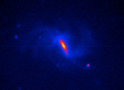
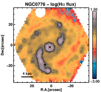
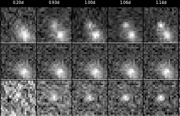
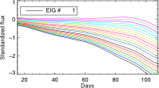

Research projects in which I have been involved
- The peculiar SN Iax 2007qd (html, paper)
Integral Field Spectroscopy of SN host galaxies (IFS)
Type Ia supernovae (SNe Ia)
- Dependence on aperture corrected host galaxy properties (html)
- SDSS SN Survey follow-up @TNG (html)
- CO studies in millimeter wavelengths (html)
- SN progenitor Delay Time Distribution (html)
- Characterizing SN environments (html, paper)
- Defining peculiar type Ia SNe (html, paper)
- The effect of the elemental abundance on the luminosity of SNe Ia (html, paper)
Other transients
- Dust extinction studies (html)

SDSS J020932.73-005959.8
Image of SN 2007qd (denoted by arrow) relative to its host galaxy. The 90s unfiltered exposure was taken on MJD 54409.08 with the TNG telescope.

Two dimensional map of the H-alpha emission in the field-of-view of the PPAK instrument, for the NGC0776 galaxy. ‘x’ represents the galaxy center, and ‘+’ the SN 1999di position

- High-cadence Transients Survey - HiTS (html)
Instrumentation
-
-CCD testing of DECam (html)

Image series showing the discovery of a SN (SNHiTS15D). 1st row: images every 1:40h. 2nd row: reference image. 3rd row: difference
Observing proposals in which I have been involved
- 2007B: ORM. Observations of Type-Ia Supernovae discovered by SDSS-II (PI: R. Miquel)
- 2014A: ORM. Elemental abundances on galaxies hosting type Ia SNe (PI: M. E. Moreno-Raya)
- 2014B: CTIO. HiTS: High cadence Transient Survey, real–time detection of stellar explosions. (PI:F. Forster)
- 2014B: ESO. Optical/NIR integral field spectroscopy of supernova explosion sites in nearby galaxies (PI: H. Kuncarayakti)
- 2014B: GEMINI. GMOS-S IFU spectroscopy of nearby supernova explosion sites (PI: H. Kuncarayakti)
- 2014B: ORM. Elemental gas-phase abundances on galaxies hosting type Ia supernovae (PI: M. E. Moreno-Raya)
- 2014B: LCO. Constrains on nearby supernova progenitors from IFU spectroscopy of the explosion site (PI: H. Kuncarayakti)
- 2014SV: ESO. Characterising the location of SNe within galaxies (PI: L. Galbany)
- 2014SV: ESO. Calibrating young simple stellar population (SSP) models with MUSE (PI: H. Kuncarayakti)
- 2014B: ESO. Spectral characterisation of extremely young SNe and possible SBO events found by HiTS (PI: J. P. Anderson)
- 2014B: ESO. Constraining progenitor Z of SNII, and exploring the scope of their use as ISM Z probes throughout the Universe (PI: Anderson)
- 2015A: CTIO. HiTS Follow-up: High cadence Transient Survey follow-up of stellar explosions (PI: F. Forster)
- 2015A: ESO. Rapid-ToO of extremely young supernovae from HITS (PI: F. Bufano)
- 2015A: CTIO. HiTS Follow-up: High cadence Transient Survey, real- time follow-up of stellar explosions (PI: C. Smith)
- 2015A: ESO. MUSE study of nearby core-collapse supernova host environments and parent stellar populations (PI: Kuncarayakti)
- 2015A: ESO. MUSE observations of SNIa environments: constraining progenitor properties, and refining distance calibration techniques (PI: Anderson)
- 2015A: CTIO. Understanding the progenitor diversity of Type II supernovae via nebular spectroscopy (PI: K. Takats)

- OCTOCAM

-
-2015B: ESO. The All-weather MUse Supernova Integral field Nearby Galaxies (AMUSING) survey II: ASAS-SN supernova rates with respect to environment properties (PI: Anderson)
-
-2015B: LCO. New Approaches to Supernova Standardisation for Cosmology (PI: González-Gaitán)
-
-2015B: DES/GEM. New Approaches to Supernova Standardisation for Cosmology (PI: Galbany)
-
-2015B: CAHA. IFS of core collapse supernova environments in low-mass galaxies (PI: Galbany)
-
-2016A: ESO. The All-weather MUse Supernova Integral field Nearby Galaxies (AMUSING) survey III: Constraining SN progenitors through understanding the origin of NaD features (PI: Anderson)
-
-SOCKS
- 2015DTD: Observations of the lowest-metallicity type II supernova and its host galaxy (PI: Anderson)
- DES SN Survey follow-up @Clay&GeminiS (html)
- The All-weather MUSe Integral field Nearby Galaxies - AMUSING (html)
- I. Presentation and Star Formation (html, paper)
- II. Environmental metallicity (html, paper)
- Optical survey of SN remnants (html)


Type II supernovae (SNe II)
- PCA of V band SN II light-curves (html, paper)
- The rise time of type II SNe (html, paper)
- Characterizing multiband SN II light-curves (html)
- Dependence on aperture corrected host galaxy properties (html)
- Measuring distances using only photometry (html, paper)

First eigenvector describing the morphology of type SNe light-curves, multiplied by the scatter of the training data. Typical IIP and IIL shapes are the extremes of this continuous sequence
- UBVRIz light-curves of 51 SNIIe (html, paper)

- Constraints on the metal mixing scale (html, paper)
Optical INT and WHT spectra of SN 2014 can be found here
Machine-readable files can be found here
- Connecting SN with their environments (html)
2D maps in FITS format used for these studies can be found here
- SN II as metallicity probes (paper)
-
-2016A: LCO. HiTS: High cadence Transient Survey, real–time detection of stellar explosions. (PI:F. Forster)
-
-2016A: LCO. Probing the CSM interaction and mass loss history of interacting supernovae via late-time spectroscopy (PI: Kuncarayakti)
-
-2016A: ESO. Observations of the lowest-metallicity type II supernova and its host galaxy (PI: Anderson)
-
-2016A: CAHA. Constraining supernova progenitors using the narrow Na absorption (PI: Galbany)
-
-2016B: LCO. The HiTS Survey: real-time detection of stellar explosions (PI: Förster)
-
-2016B: LCO. The first NIR spectroscopic study of high-z (z>0.5) SNIa host galaxies (PI: Galbany)
-
-2016B: LCO. New Approaches to SN Standardisation for Cosmology (PI: Galbany)
-
-2016B: DES/GEM. New Approaches to SN Standardisation for Cosmology (PI: González-Gaitán)
-
-2016B: ESO. The All-weather MUse Supernova Integral field Nearby Galaxies (AMUSING) survey IV: Reducing the scatter in the NIR SN Ia Hubble diagram (PI: Galbany)
-
-2016B: CAHA. Reducing the scatter of SNIa standardization in the NIR (PI: Galbany)